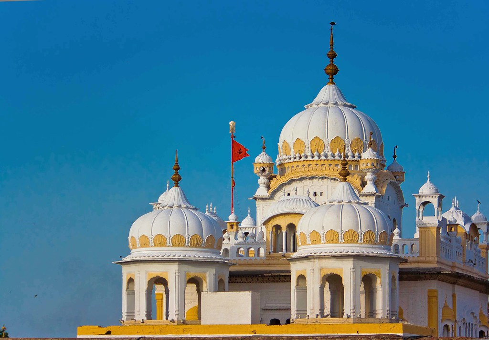
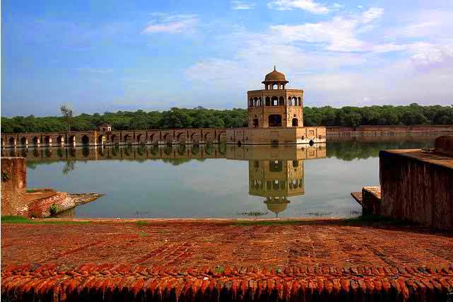
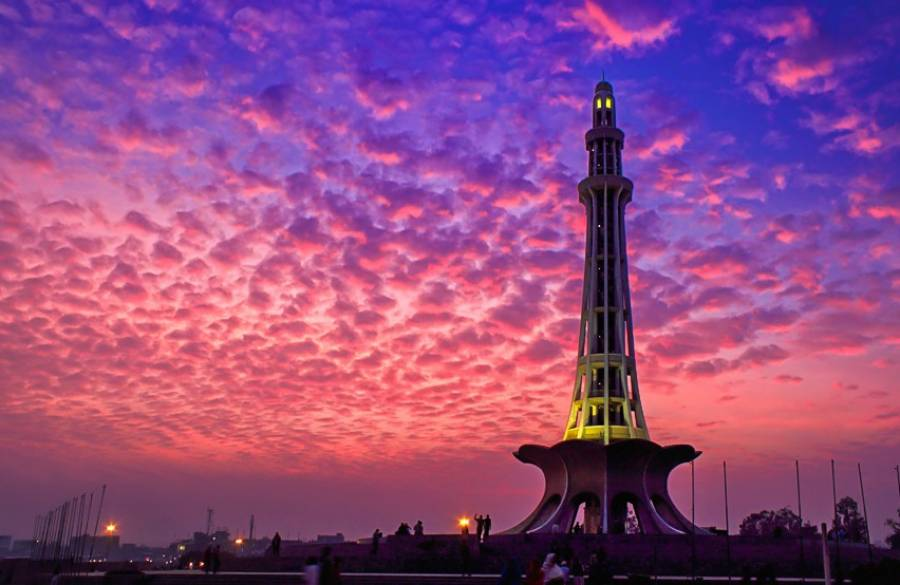

All Sites and Monuments
01
Badshahi Masjid (Mosque)
The Badshahi Mosque is a Mughal-era congregational mosque in Lahore, capital of the Pakistani province of Punjab, Pakistan. The mosque is located west of Lahore Fort along the outskirts of the Walled City of Lahore, and is widely considered to be one of Lahore's most iconic landmarks.
Hours: Mon to Sun: 8:00 am – 8:00 pm
02
Shahi Qila – Lahore Fort
The Lahore Fort is a citadel in the city of Lahore, Pakistan. The fortress is located at the northern end of walled city Lahore, and spreads over an area greater than 20 hectares. It contains 21 notable monuments, some of which date to the era of Emperor Akbar.
Hours: Mon to Fri: 6:30 am – 8:30 pm
03
Tomb of Ali Mardan
This monument was built by Ali Mardan Khan, a noble at the court of Shahjahan in 1638. He became an indispensable member and most trustworthy colleague of the Emperor and was appointed Governor of Kashmir, Lahore and Kabul. He died in 1656-57 while on his way to Kashmir and his body taken back and buried in this magnificent tomb that he had built for his mother.
Hours: Mon to Sun: 8:00 am – 5:00 pm
04
Tomb Bahadur Khan
Nawab Bahadur Khan or Khan Bahadur Zafar Jang Kokaltash was one of the important nobles of Mughal Emperor Aurangzeb, died in 1678 A.D and the tomb was built about the same time. During the British period the tomb was considered eminently suitable for entertainment activities and utilized as a theatre, popularly known as Naach Ghar (dancing hall).
Hours: Mon to Sun: 8:00 am – 8:00 pm
05
Ghulabi Bagh
While going towards Shalimar Gardens from railway station, on the left side of G.T road, next to the UET, there is a quite visible magnificent gateway (Gulabi Bagh Gateway). The gateway aperture frames the monument known as Dai Anga’s tomb. In this spectacular tomb, mortal remains of Dai Anga, the wet nurse of Mughal Emperor Shahajahan and his daughter Shahzadi Sultan Begam are buried.
Hours: Mon to Fri: 6:30 am – 8:30 pm
06
Tomb of Jaani Khan
The built of the tomb is beautiful and reflects the Mughal Architecture. If we closely observe it, the dome is decorated with porcelain tiles of blue and yellow colors. You will also see beautiful folral patterns similar to those seen of tomb of Sharf-Un-Nisa begum.
Hours: Mon to Sun: 8:00 am – 5:00 pm
07
Tomb Mahabat khan
Mahabat Maqbara and Bahauddin Maqbra are mausoleums in Junagadh, Gujarat, India. They were completed in 1892 and 1896 respectively and are dedicated to Mahabat Khan II, the Nawab of Junagadh State, and his minister Bahauddin Hussain Bhar respectively.
Hours: Mon to Sun: 8:00 am – 8:00 pm
08
Budhu's Tomb
Buddhu's Tomb, also known as Buddhu kā Āwā, is a 17th-century tomb located in Lahore, Pakistan. The tomb is traditionally attributed to that of a Lahore resident named Buddhu, though research suggests the tomb was actually built for the wife of Khan-e-Dauran Bahadur Nusrat Jang.
Hours: Mon to Fri: 6:30 am – 8:30 pm
09
Wazir Khan Hammams
Wazir Khan’s Hammam is situated in side Delhi Gate Chowk Wazir Khan at Lahore. The complex was built by Sheikh Ilmud-din Ansari entitled Wazir Khan, a native of Chiniot, who founded the splendid mosque known after his name in the Lahore city. The Hammam is surrounded by shops on its north south and west, while the eastern side is occupied by the Delhi gate.
Hours: Mon to Sun: 8:00 am – 5:00 pm
10
Chauburji, Mozang
The monument was actually a gateway to a garden that has now disappeared. It is called Chauburji because of its four corner minarets, out of which one on the north west corner was actually lost. The fragmentary inscription on its eastern archway records that the garden was founded in 1646 A.D. by a lady, mentioned meataphorically as “Shahib-e-Zebinda and was bestowed upon one Mian Bai.
Hours: Mon to Sun: 8:00 am – 8:00 pm
11
Wazir Khan Mosque
As per inscriptions –this exquisite mosque was founded in 1041 AH/1634 AD by Hakim Ali-ud Din Ansari entitled Nawab Wazir Khan, native of Chiniot, district Jhang, a viceroy of Punjab during the reign of 5th Mughal Emperor, Shahjahan. He was one of the most entrusted physicians of the prince Khurram (Shahjahan).
Hours: Mon to Fri: 6:30 am – 8:30 pm
12
Shalamar Garden
Terraced and walled gardens with pavilions and canals running through the centre were another innovation introduced for the very first time in the architectural history of the sub-continent, by Mughal Emperor Shahjahan. These garden are well known to the world by their popular name of “Shalamar”.
Hours: Mon to Sun: 8:00 am – 5:00 pm
13
Samadhi of Ranjit Singh
Smahdh refers to the place where the body of Ranjit Singh, his son Kharak Singh, and grandson Nau Nihal Singh were cremated. Smadh of Sikh ruler Ranjit Singh is occupying space in the southwest corner of Sikh Gurudwara Arjun Dev, opposite the Lahore Fort on west. Ranjit Singh was the Sikh ruler of Punjab from 1799 to 1839.
Hours: Mon to Sun: 8:00 am – 8:00 pm
14
Samadhi of Bhai Vasti Ram
The Samadhi of Bhai Vasti Ram holds spiritual value for the Sikhs. The Sikh history and reference books say that Bhai Vasti Ram lived from 1701 to 1802 in Lahore and was the son of a well-known Sikh Bhai Bulaka Singh who is supposed to have accompanied Guru Gobind Singh to the south in 1707. He returned from there with the Guru’s blessings to settle in Lahore.
Hours: Mon to Fri: 6:30 am – 8:30 pm
15
Jahangir’s Tomb
Muhammad Jahangir (1569-1627 A.D) built in the middle of an enormous garden on the right bank of River Ravi at Shahdara town on the north- western outskirts of Lahore. Jahangir died at Rajauri on his way to Kashmir and according to his will; his dead body was brought to Lahore and buried in a beautiful garden called, Dilkusha, owned by his favorite and celebrated queen Noor Jahan.
Hours: Mon to Sun: 8:00 am – 5:00 pm
16
Haveli Asif Jah
Haveli Asif Jah is a traditional townhouse or mansion which is situated in Lahore, Pakistan. It was the residence of Abu'l-Hasan Asaf Khan, a Mughal statesman who served as minister of Jahangir and Shah Jahan. Titled as Asif Khan, he was brother of Nur Jahan and father of Mumtaz Mahal.
Hours: Mon to Sun: 8:00 am – 8:00 pm
17
Mir Niamat Khan's Tomb
Mir Niamat Khan's Tomb is situated to the south of Bhogiwal and north of G.T. (Grand Trunk) road, in the locality of Babghbanpura. Mir Niamat Khan TombHemmed in by the surrounding houses, it is a handsome quadrangular tomb, surmounted by a dome of beautiful glazed pottery work, supported by arches. The arches stand of pillars of solid masonry.
Hours: Mon to Fri: 6:30 am – 8:30 pm
18
Sarvwala Maqbara
The so-called 'Cypress Tomb' (Sarvwala Maqbara) is located about 200 meters north of Dai Anga's tomb. Its name derives from the cypress tree ornamentation on the upper portion of the tomb--four on each side--surrounded with flowering plants
Hours: Mon to Fri: 6:30 am – 8:30 pm
19
Dai Anga Mosque
Dai Anga served as Shah Jahan's wet nurse and remained an influential force in the dynasty until her death in 1672. She is responsible for several monuments in Lahore that still survive, including her tomb near the Gulabi Bagh garden gate.
Hours: Mon to Fri: 6:30 am – 8:30 pm
20
Dai Anga Tomb
Zeb-un-Nisa (d. 1672), or Dai Anga ('wet-nurse' in Urdu), was the wet-nurse of Shah Jahan, and the wife of a courtier under Jahangir. She is known as the founder of the Dai Anga Mosque in Lahore, one of the city's best-used mosques of the period.
Hours: Mon to Fri: 6:30 am – 8:30 pm
21
Gul Begum Bagh Garden
Gul Begum was the wife of Maharaja Ranjit Singh, whom she married in 1831 when he was 51 years old. Gul Begum had first attracted the Maharaja's attention when he saw her performing a dance for a number of his guests.
Hours: Mon to Fri: 6:30 am – 8:30 pm
22
Hazrat Mian Mir Tomb
Hazrat Mir Mohammad Qadri (1550 - 1635 AD), popularly known as "Mian Mir", was a famous Sufi Muslim saint who resided in Lahore, Punjab. He was a direct descendant of Second Caliph Hazrat Umar Ibn al-Khattab (RA).
Hours: Mon to Fri: 6:30 am – 8:30 pm
23
Hazuri Bagh and Baradari
The Hazuri Bagh, or garden, is a vast quadrangle sandwiched between Lahore Fort to the east and the Badshahi Mosque to the west.
Hours: Mon to Fri: 6:30 am – 8:30 pm
24
Kamran's Baradari Gate
Kamran's Baradari is the ostensibly the earliest known Mughal monument in Lahore, said to have been built by Prince Kamran in the 1520s.
Hours: Mon to Fri: 6:30 am – 8:30 pm
Badshahi Masjid (Mosque)
The Badshahi Mosque is a Mughal era mosque in Lahore, capital of Punjab, Pakistan. Badshahi Mosque is located in historical setting. Its front side faces Lahore Fort and on the northern side is Minar-e Pakistan, on northeast corner is Samadhi Ranjit Sing, on suthern side is the Walled City of Lahore. The mosque is considered to be one of Lahore's most iconic landmarks.
The Badshahi Mosque was commissioned by Mughal Emperor Aurangzeb Alamgir in 1671 AD The construction of the mosque completed in two years until 1673 AD under the supervision of Muzaffer Hussain, also Known as "Fidai Khan Koka". The mosque is an important example of Mughal architecture, with an exterior that is decorated with red sandstone with marble inlay. It remains the largest and most recent of the grand imperial mosques of the Mughal-era, and is the second-largest mosque in Pakistan and is now one of the Pakistan's most iconic sights.

The entrance to the mosque lies on the western side of the rectangular Hazuri Bagh, and faces the famous Alamgiri Gate of the Lahore Fort, which is located on the eastern side of the Hazuri Bagh. The mosque is next to the Roshnai Gate, one of the original thirteen gates of Lahore which is to the southern side of the Hazuri Bagh.
The architectural composition is square based setting including central courtyard with water-pond, four octagonal minarets at four corners of square plot, a square entrance lobby accessed by 22 steps. There are three domes with marble cladding. The interior of prayer hall is ornamented with inlay marble, Stucco tracery, fresco painting etc.
During 1939-1960, a comprehensive restoration was taken up to revive the original shape of the mosque.
There is also a small gallery at upper floor of the main entrance which contains relics attributed to Holy Prophet Hazrat Muhammad (PBUH), Hazrat Ali (RA), Hazrat Fatima (RA), Imam Hassan (RA), Imam Hussain (RA) and Syed Abdul Qadir Gilani (RA).
Near the entrance of the mosque lies the Tomb of Dr. Muhammad Iqbal, a poet widely revered in Pakistan as the founder of the Pakistan Movement which led to the creation of Pakistan as a homeland for the Muslims of British India. Also located near the mosque's entrance is the tomb of Sir Sikandar Hayat Khan, who is credited for playing a major role in preservation and restoration of the mosque.
Shahi Qila – Lahore Fort
The Lahore Fort is one of the noblest structures of its kind in the world. Rising out of the northwest corner of the walled city, it has been a symbol of its earliest days. If it could speak, it would tell such things that would leave the listener breathless. It could tell of love, romance and adventure, of dark eyed beauties and fierce-browed warriors, of queens in flowing silks and kings in shining armour, of poets, actors, slaves and concubines, of soldiers and rebels, of revolutions and court intrigues, of coronations and assassinations, of treachery and black revenge.
The Lahore fort, also known as SHAHI QILA, is a reflection of many centuries. The earliest reference to the fort comes in a history of Lahur (Lahore) compiled by Al-Biruni, which refers to a fort constructed in the early 11th century. He further notes that Munshi Sujan Rae Bhandari, author of the Khulasatut Tawarikh in 1695-96 A.D., records that Malik Ayaz, a favorite of Sultan Mahmud, built a masonry fort at Lahore and repopulated the city. Khan believes it is the same fort that was destroyed by the Mongols in 1241 and in 1398 by a detachment of Timur’s army after which it was rebuilt again in 1421 by Sayyid, son of Khizr Khan.

Mughal emperor Akbar the great, demolished the earlier mud fort, and re-built it in burnt brick in 1566. Akbar’s successors, Jahangir, Shah Jahan and Aurangzeb added several buildings to the fort.
Lahore fort is located in north-western corner of the walled city of Lahore. Though irregular in scheme the fort measures about 427 meters east-west and 335 meters north-south excluding the fortification wall added later during the Sikh rule of Maharaja Ranjit Singh (1799 – 1839 A.D). It is enclosed within a strong fortification wall, built in small burnt bricks. The main gates are located in the middle of the east and the west walls. A gateway, providing access to the private apartment of the royalty, exist in the northwest corner. The fort was essentially a fortress-palace, but it also, served as an abode for royal treasury, and a stronghold in the event of war.
After the fall of the Mughal dynasty in the Punjab, in the 18th century, the Sikhs occupied the Fort. Maharaja Ranjit Singh added several pavilions on the upper ramparts. In 1849, the fort came under the British military occupation. Modifications to the fort were made during the British colonial period but consisted mainly of converting older buildings into hospitals, barracks, and other colonial functions.
Maharaja Ranjeet Singh built his rooms on the upper story of the Sheesh Mahal. Moti Masjid was turned into a temple and renamed Moti Mandir. Later the Mosque was used as a building for the state treasury. The royal kitchen was turned into food storage and horse stable. The Ath Dara (building with eight openings) was constructed outside Sheesh Mahal which was used it for kacheri (court). The gilt frescos paintings on its northern wall made by Maharaja Ranjit’s court artists reflect the style of Kangra School (legend of Krishna )of painting all around that speak loudly of its relation with Sikh period. Haveli of Kharak Singh was added in the Jahangir’s Quadrangle. After the death of Maharaja Ranjit Singh, Kharak Singh became the king but was unable to keep up the control of a huge kingdom due to which prince Nau Nihal took control of the state himself.
Tomb of Ali Mardan
This monument was built by Ali Mardan Khan, a noble at the court of Shahjahan in 1638. He became an indispensable member and most trustworthy colleague of the Emperor and was appointed Governor of Kashmir, Lahore and Kabul. He died in 1656-57 while on his way to Kashmir and his body taken back and buried in this magnificent tomb that he had built for his mother.
Present Condition (Exterior & Interior)
Since the monument is well protected because of being in the center of Railway workshop and stores areas. Present condition of the monument is good and well maintained. The sings of ravages can be attributed to the Sikh rule, during which this building of the tomb and its gateway on north, was used for military purposes.

Decorative motives/ important features
The tomb is octagonal in shape and all sides have lofty Timurid entrances. Structure is superimposed by a massive double dome raised on a drum. Although most of the small domed kiosks (chattries) at the each corner of the roof are lost, these small kiosks were popular decorative feature during 16th and 17th century Mughal tombs. There are enough strong structural evidences those suggest that the tomb was constructed in the middle of a paradisiacal (Chahar-Bagh) garden. The extents of that garden can be gauged by the double-storey gateway in the north. Similar type of gateway would have marked the centers of the south, west and east edges of the square garden. At present entire surface decorations in the interior and exterior of the tomb are obliterated except some remains of frescoes in some alcoves. The exterior walls of the tomb must once have the tile mosaic decorations which now are totally absent. The gateway on the north of the tomb still has the enameled tile mosaic embellishment to advocate the brilliance of its workmanship.
Tomb Bahadur Khan
Nawab Bahadur Khan or Khan Bahadur Zafar Jang Kokaltash was one of the important nobles of Mughal Emperor Aurangzeb, died in 1678 A.D and the tomb was built about the same time. During the British period the tomb was considered eminently suitable for entertainment activities and utilized as a theatre, popularly known as Naach Ghar (dancing hall).
This is a magnificent cut brick tomb, on a raised platform following the octagonal plan. Although bereft of its facing, it’s beautiful, well detailed brick masonry lends it a character entirely of its own. The division of wall surface in a pattern of sunken panels defined in Zanjira form and niches.

His octagonal tomb is composed primarily of cut brick work without any use of red sandstone, in contrast to many other buildings of that period. The current appearance of the tomb is much denuded: the numerous holes in the facade and dome attest to marblework that was stripped away as late as the 19th century. Despite this, traces of the tomb's original elegance are still evidenced in the beautifully carved stucco muqarnas (stalactite squinches) that embellish the tops of the outer alcoves. The design overall is similar to Ali Mardan Khan's tomb, which is located just a few kilometers to the north.
Khan-e-Jahan Bahadur Zafar Jung Kokaltash was served as Mughal governor of Lahore. He was died in 1697 and buried here and his tomb was built by Mughal emperor Aurangzeb. It is located in Mohalla Ganj, Mughalpura, near Chubchcha Railway Crossing. His tomb was damaged by Ranjit Sign in his era.
Tomb was constructed in octagonal platform by using bricks and marble, but marble was removed by Ranjit Singh.
The tomb eight sides are pierced with alcoves consisting lofty openings, roofed with qalib/ghalib kari squinches. A 5 feet high and 32 feet podium encircles the tomb. In view of the popularity of funerary gardens among the Mughals, no doubt that this tomb once stood in a large garden, the limits of which are no longer possible to trace.
Ghulabi Bagh
While going towards Shalimar Gardens from railway station, on the left side of G.T road, next to the UET, there is a quite visible magnificent gateway (Gulabi Bagh Gateway). The gateway aperture frames the monument known as Dai Anga’s tomb. In this spectacular tomb, mortal remains of Dai Anga, the wet nurse of Mughal Emperor Shahajahan and his daughter Shahzadi Sultan Begam are buried. Dai Anga was wife of Murad Khan, a Magistrate in Mughal court.
It is slightly squat looking square building raised on a plinth. The tomb structure is crowned with a low leaning single dome, placed on an elevated drum. The corners of the roof top are highlighted by providing pavilion- like square kiosks, those also supporting chajjas (eaves) and cupolas. Most of the decorations of building are disappeared but at some spots specimen of original tile mosaic can be observed on the parapet. Internally the building was embellished with fresco paintings which still surviving in the squinches above the projecting beehive-like decorative muqarna, along with a star-net dome treatment. The base of the squinches is encircled with inscriptional panels from Holy Quran, rendered in elegant calligraphy by Muhammad Saleh, mentioning the date 1082 A.H (1671 A.D).The tomb comprises of a main tomb chamber and eight interconnected rooms around it. There is no sign of original cenotaphs at present but brick structure marking the place.
There is an impressive structure of considerable height of a double storey building on the location, known as Gulabi Bagh Gateway. It is evident from its nomenclature that this was an entrance to a rose garden (Gulabi Bagh), the title Gulabi Bagh occurs in the last line of the inscription over the archway which does not only describe the kind of the garden but also as a chronogram gives the date of its construction,1657 A.D. The Gulabi Bagh was constructed by or in the memory of Mirza Sultan Baig, a Persian nobleman and cousin of Shahjahan,s son –in-law Mirza Ghiyas-ud- Din (married to princess Sultan Begam). Mirza Sultan Baig was Ameer-ul- Bahr (Admiral of fleet) in the court of Shahajahan. It is said that in 1657 A.D. while on a hunting excursion to the royal hunting reserve (kamargah) at Hiran Minar near Sheikhupura, he died of the firearm (an English rifle), presented to him by the emperor, due to bursting of a shell during hunting.
A lofty Mughal style iwan rises to two storey height incorporating a 40 feet long covered walkway defined by a single storey cusped arch gateway. The iwan is flanked on both sides with 05 feet cavernous arched alcoves. The covered walkway is lined on either side with a12 x 12 feet chamber, of course for the accommodation of guards. A staircase from inside of the chamber leads to the first floor.
The 50 feet wide façade is subdivided into slightly sunk panels presently one of the finest examples of Kashi Kari (tile mosaic). The panels defined by brick borders which are treated with Taza Kari (stucco work). Profusely embellished with multi-coloured tile mosaic, based largely on floral themes including floral arabesque. These renderings are completed in finely cut tile mosaic, using blue, green yellow and maroon colour tiles.
Tomb of Jaani Khan
One of the advantages of living in Lahore is the opportunity to venture into parts of the city that contain hidden yet fascinating histories of people lost in time. Baghbanpura, known as ‘The Town of Gardeners’ is about 5km away from the main city Lahore on the Grand Trunk (G.T. Road). Although many of the ruins exist in poor condition, they remain as a testament to the rich network of nobles that helped propel and maintain the might of the Mughal Empire in Lahore.
With the construction of the Shalimar Gardens in the 16th Century, other villages, shrines and tomb-gardens also began to cover the G.T. Road, which became places like Bhogiwal, Begumpura and Baghbanpura. Baghbanpura was inhabited by the gardeners who worked on the sprawling lands which were covered by a sharp cliff created by erosion of the River Ravi during the 16th or early 17th century. Unfortunately, over time, the gardens became reduced to residential areas, until the only Mughal-era garden that remained was the Shalimar Gardens.

Through the erasure of garden land, much of the history that encompassed the gardens also faded into obscurity. One such example is that of Jani Khan’s tomb, located in the southwest garden of Mahabat Khan Baghbanpura, which has a contentious history. Prominent British-era historian Kanhaiya Lal mentioned Jani Khan in his book, Tareekh-e-Lahore (History of Lahore) as the son of minister Nawab Qamar-ud Din Khan and brother of Moin-ul-Mulk, the latter being a Mughal governor and military general. Lal wrote that Jani Khan and his brother carried out a violent attack against the Afghan ruler Ahmed Shah Durrani in the mid 18th century, causing Durrani to retreat to Kabul. When Moin-ul-Mulk became Governor of the Punjab, he appointed Jani Khan as Commander of the Army till Khan’s death in 1778.
Other historians dispute this claim because it is not verified by historical records, and most probably Jani Khan was Moin-ul-Mulk’s father-in-law, not brother. When Ahmed Shah Durrani invaded Lahore in 1748, Jani Khan might have fought off the Afghan, but it is probable that he died in battle or a year later. Historians think that the real Jani Khan may be buried in another garden in Lahore.
Budhu Ka Awa
Latif (1892) forthrightly describes the Buddhu Ka Awa as a brick kiln or Pazava. He
attributed this Awa to a brick potter named Buddhu who, in his opinion, belonged to
Shahjahan's reign. Moreover, he continues to explain that the father of Buddhu named
Suddhu constructed several kilns on the order of Jahangir, Mughal emperor and supplied
burnt bricks for many royal edifices. After the death of his father, Buddhu continued his
father’s occupation which he flourished so well. One day it happened that a holy man named
Abdul Haq, a disciple of Hazrat Mian Mir came to Buddhu’s Kiln to warm himself in a
wintry and rainy night but he was driven out by Buddhu’s workmen. This provoked the
curse of the faqir and consequently the kiln became unserviceable.
However, Chughtai (2000) gives a different story about Buddhu Ka Awa. He says that
Buddhu Ka Awa or brick kiln was established during the reign of Shah Jahan, Mughal
emperor. He explained that Buddhu Ka Awa would have orinally been a stupa built by the
followers of Buddha. However, the structure of the stupa was later on dismantled but it gave
its name to the place where it was once stood. So the stupa was abandoned and its name
survived.
Goulding (2006) however, agrees with Latif’s opinion that it was a kiln of Buddhu, who was
a royal Brick He further added that no traces of this kiln were left as it was demolished in 1850 to provide bricks for the construction of barracks for Europeans troops at Mian Mir.
The bricks quarried from the Buddhu Ka Awa for the construction of barracks were not
sufficient in quantity, therefore, some Muslim tombs and mosques were also destroyed
which badly damaged Muslim heritage of Lahore. Thus, it becomes obvious that the Awa or
so called kiln served as a quarry of bricks.
There are many controversies regarding the identification of the person who is buried inside
the tomb which is situated on the southern side of Awa or kiln. Lal (1884) mentioned the
burial chamber as tomb of Nawab Nusrat ullah Khan also known as Naster Khan. In his
opinion, the tomb was built during the reign of Aurangzeb Alamgir which was later on used
by a French General Avitable as his residence. Avitable also built a remarkable bang low in
the vicinity of this tomb during the reign of Maharaja Ranjit Singh. The tomb remained
under occupation of Sikhs till the end of their rule. However, the grave cenotaph of Nawab
Nusrat Jhang was removed and the chamber inside was levelled to the ground on the order
of General Court and floor was paved. He altered this tomb with so many versatile
innovations and converted it into a luxurious residential building. Moreover, a mosque
located nearby this tomb, was also added up to this splendid banglow.
Wazir Khan Hammams
Wazir Khan’s Hammam is situated in side Delhi Gate Chowk Wazir Khan at Lahore. The complex was built by Sheikh Ilmud-din Ansari entitled Wazir Khan, a native of Chiniot, who founded the splendid mosque known after his name in the Lahore city. The Hammam is surrounded by shops on its north south and west, while the eastern side is occupied by the Delhi gate. The interior structure of the hamman is today utilized by the Lahore Municipal Corporation for a children school, dispensary and offices of the Health Department.
The hammam is a single storey structure, of imposing extent plan and proportion covering a total area of 1110 sft. It consists of only one structure of two blocks different in planning and sqparated by a passage.
The Hammam is a single storey building and covers an area of approximately1,050 square metres. Built on the pattern of Turkish and Iranian bathing establishments of its time (which consisted of hot, warm and cool plunges, sweat rooms and related facilities), the Hammam is a collection of 21 inter-connected rooms offering all the facilities found in a public bath, An additional room is set at an angle facing Mecca and has been used for offering prayers. Although remains found in the Lahore Fort, the Shalimar Gardens, Wah Gardens and some of the larger havelis in the Walled city indicate that smaller, private baths may have been popular during the Mughal and Sikh eras, the Shahi Hammam is the only monumental public bath in the Sub-continent from that period which still survives. The entrance gateway on the west and the main hall in the northern part of the building are exquisitely decorated with frescoed panels depicting angels, animals, birds, floral and geometric designs.
Wazir Khan hammam is built of small size bricks as used in Mughal period buildings in the city of Lahore, with lime mixed with small pebbles and fragments of bricks as bonding material. The northern half of the western façade, including the main entrance, shoes the original exterior of the hammam. The exterior has indeed a character peculiarly of its own, for it is of cut and dressed bricks and with regular rectangular recessed panels. The parapet wall shows zanjira type continuous decoration in relief. The north eastern and north western angles of the building still retain the semi-octagonal guldastas. The hammam has twelve domes and one semi-dome of the main entrance. The grouping of three small domes on each side of the high dome of the octagonal hall of the northern block is very effective. The dome of the octagonal hall of the northern block is a compounded type of dome as it is raised on a high drum pierced with windows.
Chauburji, Mozang
Situated on the Multan Road, the monument was actually a gateway to a garden that has now disappeared. It is called Chauburji (the four minarets) because of its four corner minarets, out of which one on the north west corner was actually lost. The fragmentary inscription on its eastern archway records that the garden was founded in 1646 A.D. by a lady, mentioned meataphorically as “Shahib-e-Zebinda, Begum-e-Dauran” (one endowed wit elegance, the lady of the age) and was bestowed upon one Mian Bai.
The reference is most probably to Jahan Ara Begum, the eldest daughter of Emperor Shahjahan, who was entitled as ‘Begum Sahib’ and for all official purposes was the ‘lady of the age’ after the death of her mother in 1631. That there was a garden of Jahan Ara Begum at Lahore is confirmed by two letters of Emperor Aurangzeb addressed to her.
The local tradition connects Zebinda with Zebun Nisa Begum, the accomplished daughter of Aurangzeb and Mian Bai as her maid-servant. This tradition however is incorrect, since Zebun Nisa, born in 1639, was still a child of eight when the garden was founded.
Mian Bai is not Known to history, but that she was a maid servant is not supported by the fragmentary inscription on the south-west corner of the gateway, which records that the garden was constructed by Mian Bai, the pride of women (Fakhrun Nisa). From the word “Fakhrun Nisa” it seems that she was a lady of status.
The main architectural merit of the building is its rich mosaic decoration with which its entire façade including the octagonal corner minarets are brilliantly embellished. The minarets are slender for their height and end at the top in coved platforms which once carried arched pavilions.
The panel over main vault is inscribed with Ayat-al-Kursi, a verse of Holy Quran, in blue enameled letters. At the end of this inscription the year A.H. 1056 (1646 A.D) is also given.
Wazir Khan Mosque
Wazir Khan Mosque is the most intricately decorated, 17th century Mughal era mosque, which maintained its place as the primary location of worship in the old city. It stands tall near the Delhi gate of the walled city of Lahore, leading through a busy bazaar, where you can hear the blaring horns and quibbling voices of busy customers through the mosque’s walls.
The detailed Islamic design and architecture of the mosque takes you back to the time when Muslims ruled over the subcontinent. You will find complicated fine patterns decorating the walls – mosaic design also known as kashi kari, fresco painting, engraved stones and brick outline fresco (taza kari) that add to the mosque’s uniqueness.
It was built around an ancient tomb of a saint Syed Mohammad Ishaq Gazrooni, who is more famously known as Miran Badshah. He migrated from Iran in the 13th century and had lived in Lahore during the period of Turkish-Muslim Tughlaq dynasty. Wazir Khan Mosque was part of a larger complex that included a row of bazaars where calligraphers and book binders used to repair holy books and paint Quranic verses.
However, with time the Calligrapher’s bazaar extended and there were other merchants selling spices and other items. The earnings from these markets were used for the mosque’s maintenance. Until now, you will find many shops around the historic mosque in Lahore, which is a characteristic feature of Wazir Khan Mosque.
The construction began in 1634. A.D. Only a short walk away from the Lahore Fort, the mosque holds great significance as the Emperor Shahjehan used to offer his Friday congregational prayers in Wazir Khan Mosque.
Interestingly, Wazir Khan Mosque leads through a Royal Trail, which is a 1.6 km road from the Delhi Gate of the walled city of Lahore. Many Mughal Emperors rode on horses through Delhi Gate to the Lahore Fort.
Shalamar Garden
Lahore, the city that once stood at the epicentre of the Mughal Empire, is often referred to as the ‘City of Gardens’ owing to its large number of parks, gardens and picnic spots. While the historic city is worthy of the title bestowed upon it, only a few of its Mughal-era gardens have managed to survive the various reigns that came after the downfall of the grand empire and later, the partition. Even fewer of those gardens were preserved as a reminder of the cultural significance of this bustling metropolis. Fortunately, the majestic Shalimar Gardens, Lahore, are among the ones that only survived the test of the times but stand proudly as the zenith of Mughal architecture and one of the most historical places in Pakistan.
The iconic complex of Shalimar Gardens was built in 1641-1642. Counted among the biggest tourist attractions in Punjab, Shalimar Gardens in Lahore – more commonly known as Shalimar Bagh – draw a large number of domestic and foreign tourists throughout the year. In fact, you can’t complete your trip to Lahore without visiting this stunning terraced garden with mesmerizing fountains, breathtakingly beautiful foliage, exquisitely designed pavilions and much more.
According to the historians, a flood swept through Lahore sometime between 1620 and 1630, exposing a tiered terrain at the edge of the River Ravi. Owing to its terrain and fertile soil, the terrain presented to be the perfect site to build a royal garden. Although it was about a day’s ride from the Lahore Fort at the time, it was mainly chosen as the perfect spot for Shalimar Gardens due to its stable water supply.
The construction of Shalimar Gardens in Lahore began in June 1641. Since the terrain was vastly different from the Kashmiri landscape, it took a team of engineers and architects almost 18 months to create the three-terraced garden complex with artificial water cascades, pools, fountains and seating areas.
In 1806, Shalimar Gardens were repaired by the then-Maharaja. Following the independence of Pakistan in 1947, the garden remained as one of the famous historical places to visit in Lahore. It also used to be the site for the annual Mela Chiraghan festival, which was banned in 1958. Four years later, General Ayub Khan nationalized the Shalimar Bagh, ending the custodianship of the Arain Mian Family.
Samadhi of Ranjit Singh
Maharaja Ranjit Singh was born in 1780 in Gujranwala. He was named Ranjit Singh by his father Mahan Singh, the Sikh ruler. Ranjit Singh had his first taste of battle when he was hardly ten years old. It was Sahib Singh Bhangi (they were called bhangis as they use to drink ‘Bhang’ all the time) of Gujarat (a town in Punjab, now in Pakistan) who refused to pay tribute to Mahan Singh and his estate, and was attacked by him. Mahan Singh died in 1792 when Ranjit Singh was only 12 years old. Being too young to manage the affairs of the state his mother Raj Kaur became his guardian. Ranjit Singh learnt riding and shooting in early years of his life. As per Sikh History, it was July 7, 1799 when victorious Ranjit Singh entered Lahore. On April 12 1801, Ranjit Singh declared himself Maharaja of Punjab.
Ranjit Singh, the one-eyed Sikh ruler of the Punjab (ruled 1801-1839), considered himself the heir to the Mughal Empire. Among the people he was known as Sher-e-Punjab (lion of Punjab). He not only followed many of the customs of the Mughal court, but also built buildings utilising elements taken from Mughal monuments. Historic accounts state that even though he had conquered the citadel of the Mughals, he is said to have never seated himself on the throne in the Fort.


The Samadhi is a beautiful blend of Hindu, Sikh and Muslim architectural styles. It has gilded fluted domes and cupolas and a complex railing round the top. The front of the doorway has images of Ganesh, Devi and Brahma, the Hindu deities, cut in red sand stone. The dome is heavily decorated with Naga (serpent) hood designs, a rich and fitting tribute to Hindu craftsmanship. The wood panels on the ceiling are covered with stained glass work and the walls have rich floral designs.
The ceilings are decorated with glass mosaic work. Maharaja Ranjit Singh’s ashes are contained in a marble urn in the shape of a lotus, sheltered under a marble pavilion inlaid with pietra dura, in the centre of the tomb. The Maharaja does not lie alone there. Surrounding him, in smaller knob-like urns, are the ashes of four sati queens (burned alive on the pyre with their husband) and seven slave girls. The ashes of two pigeons, burnt while flying over the pyre, also have their place in the Samadhi.
This Samadhi was originally built on eight pillars. Due to depreciation of the building over time cracks appeared in the pillars. The British government, under the orders of Sir Donald Macleod, late Lieutenant-Governor of Punjab, erected thick iron rings around all the old pillars and raised eight additional pillars. The entire building is now supported by sixteen pillars.
Hiran Minar and Tank
The Minar Built in country bricks was constructed under orders of Emperor Jahangir in about 1606 A.D. it was built in the loving memory of his pet antilope named Mansraj, which was captured somewhere in this area originally a royal hunting reserve. Jahangir has mentioned in his Tuzk that near Jahangir pur (Present Sheikhupura) a minaret was raised by his orders, in 1051 A.H. 1606 at the grave of an antelope called Mansraj.
It is a massive, tampering and high brick built tower of four storeys excluding the top one which is missing. The existing height is 95’-4”. The lowest storey or basement is octagonal in plan with each side measuring 13’-3” and is richly paneled. The rest three storeys are circular. There are small openings for light in each storey and in the third storey there is a small octagonal room where the visitors can take respite.
The staircase is entered through a small door provided, at regular interval in the three upper storeys of the minar. The exterior of the tower was once lime plastered sufficient patches of which still remain. The ruined platform on the north is apparently a latter addition. The main object of the builder appears to have been to gain height besides a memorial, it may also serve as excellent watch tower to locate the wild antelope and other game.

About 275 feet east of the Hiran Minar is a suitable double storey gateway of the usual Mughal style leading to the Daulat Khana or baradari situated in the centre of a big thank and is approached by a long cause-way built on 21 pointed arches erected from the middle of the west side of the tank right upto the Baradari. This island summer house in the midst of a spacious area is a unique monument in Pakistan
The tank is enclosed by a terraced wall 8 ½ feet high and 7 ½ feet thick surrounded by a dwarf wall 2’ thick and 2 ½’ high thus the whole thickness of the terraced wall is 9’-9”. In the centre of each side of the tank there is a spacious paved ramp for the entry of animals and boats. Besides on every side the terraced wall is pierced at regular intervals with four stair cases 7’-7” wide and of 7 steps each allowing entry to the tank.
Occupying the centre of the tank, the Daulat Khanah is a precious octagonal summer house in three storeys, the top one being only a domed open pavilion. The entire structure rests on a high octagonal plinth emerging out of water sheet of the tank.
Jahangir’s Tomb
The tomb of Jahangir was built after the Mughal emperor’s death in 1627 and completed in 1637, in the reign of his son and successor, Shah Jahan, when the Mughal Empire held sway over the entire Indian subcontinent and Lahore was an important urban center. The emperor, a lover of nature, wished to be buried in Shahdara, until that time a precinct of pleasure gardens on the far side of the Ravi River from the fortified citadel of Lahore.
The tomb was placed in the center of a large, Persian-style garden, forming a tranquil setting for commemoration. The garden was laid out in four quadrants, based on the char bagh prototype established in Kabul under Babur, Jahangir’s ancestor and the founder of the Mughal dynasty. Each quadrant was subdivided into quadrants in turn, demarcated by water channels that symbolize the four rivers of paradise, with paved walkways laid alongside them and fountains placed at their intersections.

Water from wells dug outside the perimeter was lifted onto channels that were built into the tops of the enclosure walls, and from there flowed thanks to gravity to the fountains and water channels at ground level. The tomb was placed at the principal intersection, in a single-story structure with corner minarets enclosing a white marble sarcophagus at its center. The building’s exterior is made of red sandstone with floral and other motifs inlaid in marble.
The garden is accessed through a transitional space, known as the Akbari Serai, which is adjacent on its other end to the tomb of Mughal official Asif Khan, Jahangir’s brother-in-law. These monuments are part of the large collection of Mughal-era monuments that survive in Lahore, which is frequently praised as the cultural capital of Pakistan. Together, the three monuments and gardens form a candidate site for future inscription on the UNESCO World Heritage List.
Minar-e-Pakistan
Minar-e-Pakistan is a historical monument in Lahore. It is considered as the largest tower in Pakistan. Minar-e-Pakistan is the place where Lahore resolution was passed which was the official call for a separate homeland for the Muslims of South Asia in the result of two nation theory.
Minar-e-Pakistan which is also known as the “Tower of Pakistan” is an open landmark placed in Iqbal Park in Lahore, Pakistan. The tower was built throughout the 1960s on the site where, on 23 March 1940, the All-India Muslim League passed the Lahore Resolution, the first official call for a differentiate country for the Muslims living in the South Asia, as per the two country theory. The tower reflects a mix of Mughal, Islamic and present day structural engineering.
The base is in the ballpark of 8 meters above the ground. The tower ascents around the range of 62 meters on the base, along these lines the aggregate stature of minaret is in the vicinity of 92 meters above the ground. The unfolding petals of the bloom like base are 9 meters high. The breadth of the tower is something like 9.75 meters. The platform is constructed of designed tiles, and faces the Badshahi Mosque. The base involves four stages. To symbolise lower beginnings of the flexibility battle, first stage is constructed with uncut Taxila stones, second stage is made of mallet dressed stones, while third stage is of chiselled stones. Cleaned white marble at the fourth and last stage delineates the triumph of the Pakistan Movement. Mr. Mukhtar Masood, a productive author and the then–deputy official of Lahore, was one of the parts of the Building Committee.

At the base, there are botanical engravings on ten focalizing white marble Commemorative plaques. The engravings incorporate the content of Lahore Resolution in Urdu, Bengali and English, and Delhi Resolution's content, which was passed on 9 April 1946. On diverse plaques, Quranic verses and99 properties of God are engraved in Arabic calligraphy, though National Anthem of Pakistan in Urdu and Bengali, selections from the talks of Muhammad Ali Jinnah, in Urdu, Bengali and English, and also not many couplets of Allama Iqbal are inscribed.
With the development of the city and area of the landmark at occupied convergence of Circular Road and Multan Road, air contamination from movement clogging is ceaselessly harming the marble structure which is presently in need of renovation. Being the verifiable tower of Pakistan and having incredible significance, it is greatly suggested by the designers that the building needs repair any other way it. Minar-e-Pakistan is considered as the national building of Pakistan. Many of the tourists from the whole world prefer to visit this historical monument.
Sarvwala Maqbara
Cypress Tomb or Sarvwala Maqbara, built mid-18th century. It holds the body of Sharfun Nisa Begum. She was the sister of Nawab Zakaria Khan Mughal. Cypress Tomb is located about 200 meters north of Dai Anga’s tomb. Its name derives from the cypress tree ornamentation on the upper portion of the tomb surrounded with flowering plants. The tomb is elevated about 5 meters off the ground to shield the grave from direct sight. It is only accessible using a ladder. There was a garden around it in past. There is no evidence of this now. remains of its former boundaries or dimensions.
To visit the unusual monument of Cypress Tomb, take a left turn on Begampura Road, going east on G.T. Road. Turning right through a locality known as Sharif Park and turning left again, you will be there. The tomb is not directly visible. It is only slightly set back from the road and you can access it in car.
This tomb was constructed in 1745 at Lahore. The tower like form is unique in itself. Which is sporting slightly battered walls. The tomb for its unusual shape and facade decoration of cypress motif is considered to be the jewel of Mughal architecture at Lahore.
The building was constructed to cater to Sharf-un-Nisa Begam’s requirement of daily visits to the first floor chamber, 16′ above the ground. After her death she was buried in the same chamber, along with a copy of the holy book and her jeweled sword. Respecting her wishes to keep her mortal remains out of sight and inaccessible, all openings were blocked up. It is providing a blank appearance in the battered walls on all four sides. Decorative features are extant only in the upper part of this two-storey structure.
Dai Anga Mosque
Dai Anga served as Shah Jahan's wet nurse and remained an influential force in the dynasty until her death in 1672. She is responsible for several monuments in Lahore that still survive, including her tomb near the Gulabi Bagh garden gate. Her mosque, seen here, was constructed in 1635. Although a relatively small structure, it is notable for its refined use of decoration and its stately three-bay facade. It remains in an excellent state of preservation since Dai Anga took care to donate a substantial waqf (endowment) to ensure its maintenance after her death. However, in spite of this, it was briefly converted into the residence of Henry Cope, a newspaper editor, during the rule of the British. It was restored to its original function in 1903 and has served as an active mosque ever since.
Dai Anga was well respected in the royal family and her original name was Zeb-un-Nisa and was also the wet nurse of the Mughal Emperor, Shah Jahan. According to historic references it is said that her family was closely connected with the Mughal Empire and had served them for ages. Dai Anga’s husband Murad Khan served Emperor Jahangir as Magistrate of Bikaner, and her son Muhammad Rashid Khan, was the best archers in the Mughal kingdom. It is also said that the son of Dai Anga died while fighting in the service of Shah Jahan’s eldest son Dara Shikoh.
The mosque has a magnificent exterior and an equally grand interior though it is said to be “simple” as compared to the other mosques of the Moghul era. The structure is octagonal in shape with minarets at each corner. There is a dome in the centre with two smaller domes on each side.
Dai Anga during her life time made a Mosque in Lahore and later her tomb was also built in Lahore on the Grand Trunk Road which is also known as Gulabi Bagh gateway. I am surprised at times that having such importance in Mughal History, the marks of Dai Anga are forgotten and most of us living in Lahore do not know about these places. Unfortunately, the tomb of Dai Anga and the Mosque which are both at different locations, are not visited by many as these are not the tourist sites nor these are much highlighted, but trust me these are masterpieces and one must visit them to see the taste of the artisans of those times.
The mosque was visited by the faithfuls during the Moghul period but later on when Punjab came under the Sikhs, the mosque along with other historic buildings was used for military purposes. Later during the colonial period it served as a residence and then as a railway office due to its proximity to the railway station. It was then handed back to the Muslims.
Dai Anga Tomb
Dai Anga's tomb is located at the site of Bulabi Bagh, an earlier garden of which the only the gateway, Gulabi Bagh, survives. The tomb was built for Dai Anga, the wet nurse of Shah Jahan and the wife of Murad Khan, a magistrate of Bikaner under Emperor Jahangir. The tomb is rectangular in plan with eight perimeter rooms and a central chamber, surmounted by a low dome on a tall base. The space inside is empty, as the actual tomb of Dai Anga lies below in a subterranean chamber. Interior decoration includes inscriptions from the Q'uran.
The exterior of the tomb was originally covered with mosaics, but in the manner of many tombs in Lahore, most of these have been worn or stripped away over the centuries. However, the tomb does retain its original four chattris (kiosks) at each of its corners, which contribute a certain lightness to the otherwise weighty structure.

Dai Anga during her life time made a Mosque in Lahore and later her tomb was also built in Lahore on the Grand Trunk Road which is also known as Gulabi Bagh gateway. I am surprised at times that having such importance in Mughal History, the marks of Dai Anga are forgotten and most of us living in Lahore do not know about these places. Unfortunately, the tomb of Dai Anga and the Mosque which are both at different locations, are not visited by many as these are not the tourist sites nor these are much highlighted, but trust me these are masterpieces and one must visit them to see the taste of the artisans of those times.
Her real name was Zeb-un-Nisa, and her family served the Mughal Empire for years. Her husband and brother were important and trusted administrators of the emperor, and her son was allegedly Dara Shikoh’s best archer. Not one, but two monuments in Lahore stand today as a reminder of Dai Anga and of her important position in the pages of history: the mosque she commissioned, and her tomb.
Gul Begum Bagh Garden
Gul Begum was the wife of Maharaja Ranjit Singh, whom she married in 1831 when he was 51 years old. Gul Begum had first attracted the Maharaja’s attention when he saw her performing a dance for a number of his guests. When learning she was from Amritsar, the Maharaja rode there personally and requested that the girl appear before him, which she did.
Even when learning that she was a Muslim as the Maharaja was himself a Sikh, he was so captivated by her that he chose to defy social convention by marrying her. He first went to the Golden Temple at Amritsar to pray forgiveness for his actions then proceeded with his plan. He announced that Gul Begum would be his queen, but that her faith would be respected. For the next few years after their marriage Gul Begum, who was then known as Maharani Gulbahar Begum collaborated closely with the Maharaja and even rode on the same elephant as him when appearing in public.
While living in Lahore Gul Begum was provided with a detached palace between the Rang Mahal and Haveli Mian Khan, not far from the site of the garden shown here which she had built in 1856, 17 years after the Maharaja’s death. She spent the remainder of her life in this area now known as Mozang and built a tomb-like building on the south side in which she was buried in 1865 or 1866. Although she had no children she was cared for by her adopted son Sardar Khan who cared for the gardens and is also buried here.
Pools, fountains and corridors were built; in the midst of these an elegant mosque was constructed. If you walk down the road alongside Chauburji Crossing, you will pass the building of Surrayya Azeem Trust Hospital on your left. If you continue ahead past the hospital the road will lead to Miani Sahib Graveyard. A little way down this road the enclosure of Mirza Tahir Bandahgi’s shrine skirts the edge of the road. Behind it is the area of Gul Begum Garden. If you come from Mozang Square to Chauburji, the shrine of Wasif Ali Wasif is on roadside.
Hazrat Mian Mir
Hazrat Mir Mohammad Qadri (1550 - 1635 AD), popularly known as "Mian Mir", was a famous Sufi Muslim saint who resided in Lahore, Punjab. He was a direct descendant of Second Caliph Hazrat Umar Ibn al-Khattab (RA). He belonged to the Qadri order of Sufism. He is famous for being a spiritual instructor of Dara Shikoh, the eldest son of Mughal emperor Shah Jahan.
Hazrat Mian Mir was a friend of God-loving people and he would shun worldly, selfish men, greedy Emirs and ambitious Nawabs who ran after faqirs to get their blessings. To stop such people from coming to see him, Mian Mir posted his mureeds (disciples) at the gate of his house.
After having lived a long life of piety and virtuosity, Mian Mir died in 1635 AD (1045 AH). His funeral oration was read by Mughal prince Dara Shikoh, who was a highly devoted disciple of this great Sufi Saint. There is a hospital named after him in his hometown Lahore, called Mian Mir Hospital.
He was buried in Dharampura Lahore. Mian Mir's spiritual successor was Mullah Shah Badakhshi (RA). Mian Mir's mausoleum still attracts hundreds of devotees each day and he is revered by many Sikhs as well as Muslims. The tomb's architecture still remains quite intact to this day. His death anniversary (Urs) is observed there by his devotees every year.
Hazuri Bagh and Baradari
The Hazuri Bagh, or garden, is a vast quadrangle sandwiched between Lahore Fort to the east and the Badshahi Mosque to the west. Measuring about 150 meters on a side, the garden is arranged in a traditional four-part charbagh design with a marble pavilion, known as a baradari (literally, twelve doors), standing serenely at its center. Though the site appears harmonious today, it represents the culmination of several centuries of royal sponsorship, often with competing aims.
The origins of the garden date back to the reign of Aurangzeb (r. 1658-1707), the sixth and last of the great Mughal emperors. Aurangzeb was not a particularly prolific builder in the mold of his father, Shah Jahan, but he did sponsor a handful of important buildings such as the Badshahi Mosque, which was constructed in 1673.
For liturgical reasons the mosque was oriented with its western facade canted toward Mecca, putting the building off-axis with the larger bulk of the Lahore Fort to the east. Perhaps to maintain symmetry between the two buildings, Aurangzeb constructed a grand gateway—now known as the Alamgiri gate—on the west side of the fortress. The gate served as a convenient passage for the Emperor as he made his way to and from the mosque for Friday prayers in pomp and ceremony.
Besides satisfying the Emperor's vanity, the parade ground doubled as a caravanserai, a place where pilgrims and travelers could seek refuge for the night. Traditional caravanserai are large open-air courtyards with fortified outer walls and inward-facing accommodations, a form that roughly matched the quadrangle that formed the parade ground. If the space truly functioned as a caravanserai, it is reasonable to assume that the entire area was cordoned off, perhaps with walls on the north and south sides of the courtyard lined with rooms for travelers and their livestock. One surviving example that suggests how this space might have looked is the Akbari Serai, a caravanserai between the tombs of Jahangir and Asaf Khan.
The rise of Ranjit Singh's Sikh empire in the late 18th and early 19th centuries undermined the ritual significance of the Badshahi Mosque, as Ranjit Singh remained devoted to the Sikh faith. The mosque fell into disuse and was even turned into a military magazine
Kamran's Baradari Gate
Kamran's Baradari is the ostensibly the earliest known Mughal monument in Lahore, said to have been built by Prince Kamran in the 1520s. However, the pavilion more likely dates to the reign of Shah Jahan (1627-58) as certain architectural features such as the use of cusped arches were not employed until Shah Jahan's reign. The attribution of the structure to Prince Kamran likely derived from local oral traditions which were picked up by Latif when he collected material for his comprehensive book on Lahore's architectural heritage in 1892.
The baradari originally stood at the edge of the Ravi river, but over time the course of the river changed and the site became an island. Sometime over the course of the centuries the river flooded, taking half the baradari along with it.
As Mughal buildings are generally symmetrical, it was possible for historians to infer the design of the lost portion and it was rebuilt in 1989 at a cost of 19.6 million rupees (about $1 million USD at the time). Unfortunately, the restoration extended to the remaining half and resulted in the total effacement of its surface decoration including the few fragments of original decoration to have survived. Of the gardens, very few traces survived in the late 20th century and a new garden based partially on Mughal motifs was built to the west of the Baradari.